🔥 Heat: Transfer of Thermal Energy 🌡️
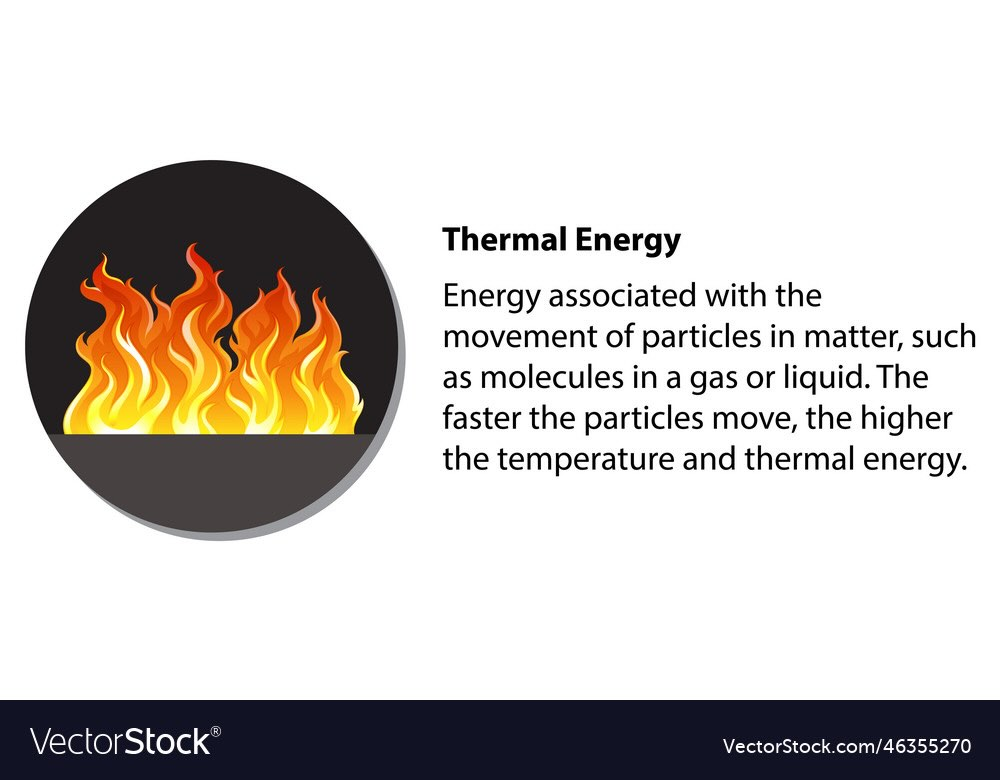
Thermal energy in action - the flame shows how particle motion creates heat and light
What is Heat?
Heat is the transfer of thermal energy from one object to another. This transfer always happens from hotter objects to colder objects. Think of it like energy flowing downhill - it naturally moves from high-energy (hot) places to low-energy (cold) places!
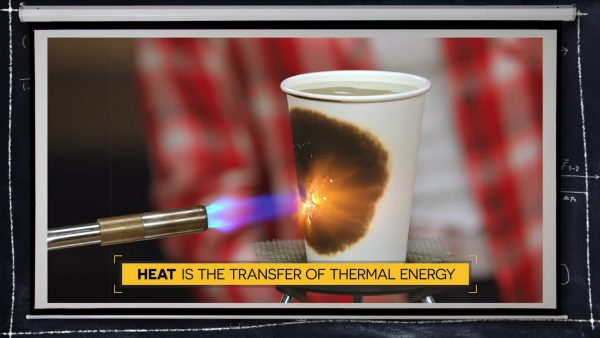
Energy transfer in action: The torch transfers thermal energy to the cup through radiation and conduction
🧪 Understanding Temperature, Thermal Energy, and Heat
Temperature: The Particle Dance
Imagine you could shrink down to see the tiny particles (atoms and molecules) that make up everything around you. Even in a seemingly still cup of coffee, these particles are constantly moving - vibrating, rotating, and bouncing around!
Temperature is a measure of the average kinetic energy of particles in a substance. The faster the particles move, the higher the temperature!
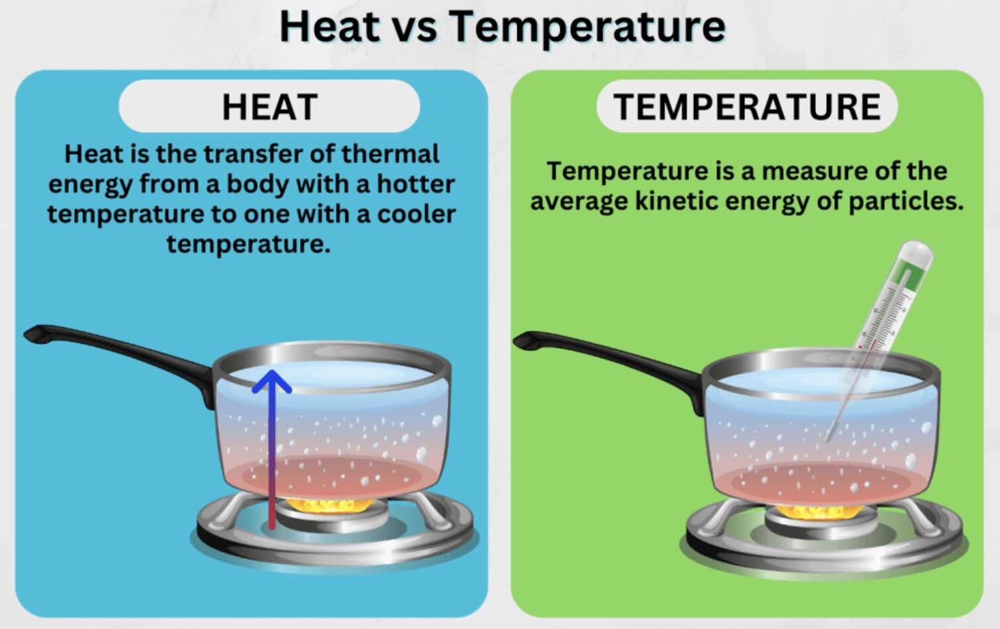
Understanding the key differences: Heat is energy transfer, while temperature measures particle motion
Real-World Example: When you stick a thermometer in hot coffee, you're measuring how fast the water molecules are moving on average. Hot coffee = fast-moving molecules. Cold coffee = slow-moving molecules.
Thermal Energy vs. Heat: What's the Difference?
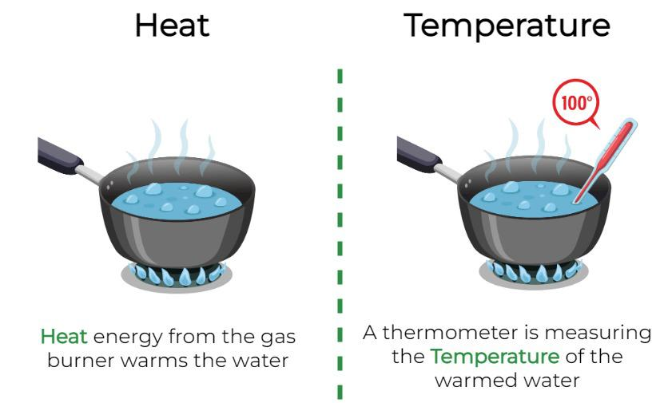
Visual comparison: Notice how temperature measures intensity while thermal energy considers both temperature AND amount of material
🤔 Think About This:
Which has more thermal energy - a cup of hot tea or a spoonful of hot tea at the same temperature?
Answer: The cup! Even though both are at the same temperature, the cup contains more particles, so it has more total thermal energy.
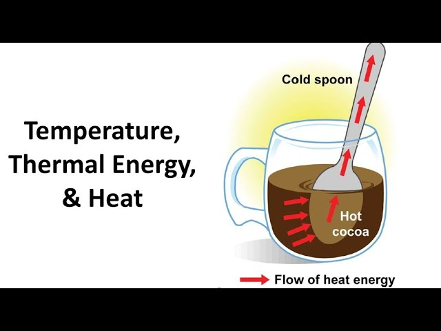
Perfect example: The spoon and cocoa cup may be at the same temperature, but the cup has much more thermal energy due to its larger mass
| Thermal Energy |
Heat |
| Energy contained within a system due to particle motion |
Transfer of thermal energy from hot to cold objects |
| Like money in your bank account |
Like transferring money to someone else |
| Depends on temperature AND amount of material |
The process of energy moving between objects |
🌊 The Three Ways Heat Travels
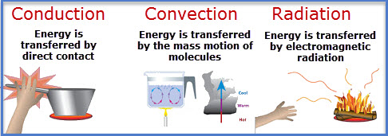
The three pathways of thermal energy: conduction (contact), convection (fluid movement), and radiation (waves)
🔬 Laboratory Demonstration
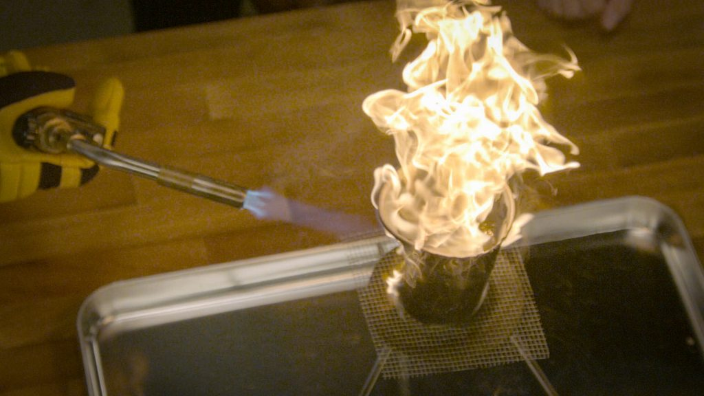
Laboratory setup showing heat transfer in action - all three methods can be observed around this flame!
In this demonstration, we can observe all three types of heat transfer:
- Conduction: Heat travels through the metal stand
- Convection: Hot air rises from the flame
- Radiation: You can feel warmth from the flame even at a distance
1. Conduction: The Contact Connection
Conduction is the transfer of thermal energy through direct contact between particles. When fast-moving particles bump into slower-moving particles, they share their energy!
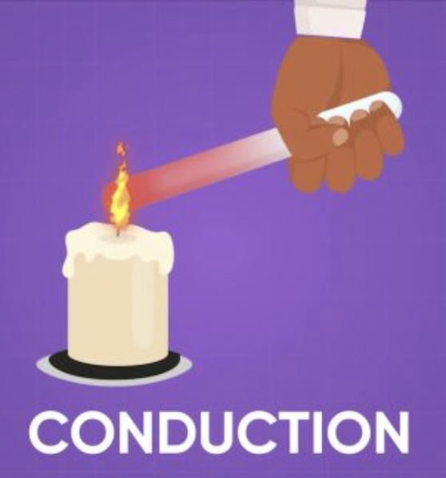
Conduction in action: Energy passes from particle to particle through direct contact, like a chain reaction
🔬 Imagine This Experiment:
Picture a copper bar with chocolate pieces on one end. When you heat the other end:
- Copper atoms at the heated end start vibrating faster
- These energetic atoms bump into their neighbors
- The energy travels along the bar like a chain reaction
- Eventually, the chocolate melts as the energy reaches it!
In conduction, no material actually moves - only energy transfers through particle collisions!
2. Convection: The Circulation System
Convection is the transfer of thermal energy through the movement of fluids (liquids and gases). Unlike conduction, the material itself actually moves!
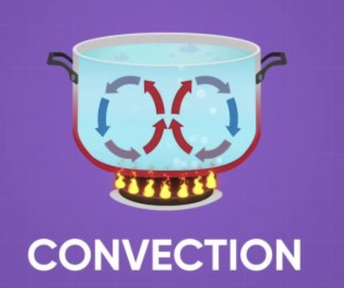
Convection currents: Hot fluid rises while cool fluid sinks, creating circulation patterns that transfer energy
How Convection Works:
- Heating: When fluid particles heat up, they move faster and spread out
- Density Change: Hot fluid becomes less dense (lighter) than cold fluid
- Rising: The hot, less dense fluid rises upward
- Cooling: As it rises and moves away from heat, it cools down
- Sinking: Cool, dense fluid sinks back down
- Circulation: This creates circulation currents!
Kitchen Science: When you heat water in a pot, the water at the bottom gets hot first and rises. Cooler water from the top sinks down to replace it, creating a circular flow pattern. This is why saying "heat rises" isn't quite right - it's more accurate to say "heated fluid rises"!
3. Radiation: Energy Through Waves
Radiation is the transfer of energy through electromagnetic waves. This is the only type of heat transfer that doesn't need matter to travel through - it can even travel through empty space!
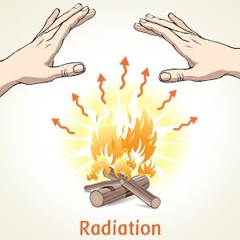
Radiant heat in action: The campfire warms people through electromagnetic waves, even across empty air
Amazing Example: The Sun's energy reaches Earth through radiation, traveling 93 million miles through the vacuum of space! When you sit by a campfire, you feel warm from the infrared radiation even before the air around you heats up.
⚡ Factors Affecting Heat Transfer Rate
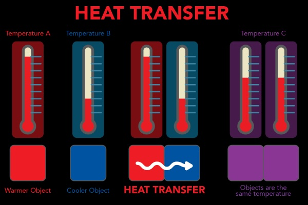
Temperature differences drive heat transfer - the greater the difference, the faster the energy flows
1. Amount of Material (Mass)
🥄 Quick Question:
Which cools down faster - tea in a cup or tea in a spoon?
Answer: The spoon! With fewer particles, each particle loses energy more quickly, so the temperature drops faster.
2. Type of Material
Different materials have different abilities to store and transfer thermal energy. This property is called heat capacity.
| Material |
Heat Transfer Rate |
Heat Capacity |
| Iron |
Fast |
Low (heats up and cools down quickly) |
| Tin |
Medium |
Medium |
| Bismuth |
Slow |
High (heats up and cools down slowly) |
Materials with high heat capacity are great for storing thermal energy, while materials with low heat capacity are good for quick heating and cooling!
🏠 Real-World Applications
Keeping Things Hot
- Thermos Flasks: Use vacuum insulation to prevent all three types of heat transfer
- Winter Clothing: Trap air to reduce convection and conduction
- Solar Cookers: Use reflective materials to focus radiation energy
Keeping Things Cool
- Computer Fans: Use convection to carry heat away from processors
- Emergency Blankets: Reflect body heat radiation back to the person
- Ice Coolers: Use insulation to slow heat transfer to ice
Cooking and Kitchen Science
- Metal Pans: Copper and aluminum conduct heat quickly for even cooking
- Pot Handles: Made of materials that don't conduct heat well
- Convection Ovens: Use fans to circulate hot air for faster cooking
🧠 Key Concepts to Remember
Essential Vocabulary:
- Heat: Transfer of thermal energy from hot to cold objects
- Thermal Energy: Energy within a system due to particle motion
- Temperature: Measure of average kinetic energy of particles
- Conduction: Heat transfer through direct contact
- Convection: Heat transfer through fluid circulation
- Radiation: Heat transfer through electromagnetic waves
- Heat Capacity: A material's ability to store thermal energy
🎯 Material Selection Guide
For Maximum Heat Transfer (Conductors):
- Metals like copper, aluminum, iron
- Thin materials
- Large surface areas
- Dark, rough surfaces for radiation
For Minimum Heat Transfer (Insulators):
- Air gaps and foam
- Thick materials
- Multiple layers
- Reflective surfaces for radiation
- Materials like wood, plastic, ceramics
🔬 Understanding Heat Transfer in Daily Life
Why Does Metal Feel Colder Than Plastic?
Even at the same temperature, metal feels colder because it's a better conductor. It quickly draws heat away from your skin, making your skin feel cold!
How Do Hot Air Balloons Work?
Hot air balloons work on convection principles! When air inside the balloon is heated, it becomes less dense than the cooler air outside. This density difference creates buoyancy, lifting the balloon upward.
Why Do We Use Fans to Cool Computers?
Computer processors generate heat that could damage them. Fans create convection currents that carry hot air away and bring cooler air in, preventing overheating. This is much more effective than relying on conduction alone!
🎉 Summary: Heat Transfer Mastery
Understanding heat transfer helps us solve real-world problems! Whether you're designing a solar cooker, choosing materials for winter clothing, or figuring out the best way to cool a hot beverage, the principles of conduction, convection, and radiation guide your decisions. Remember: heat always flows from hot to cold, and different materials and designs can speed up or slow down this process depending on what you need!